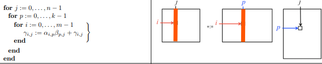

7) CPU Optimization: Matrix-Matrix Multiply#
Last time:
Measuring performance
Today:
Introduction to CPU Optimization
1.1 Matrix-Matrix MultiplyLoop ordering
1. Introduction to CPU Optimization#
In this module we talk about optimizing matrix-matrix multiply on the CPU. Some of the material here is largely based on the LAFF-On Programming for High Performance of Robert van de Geijn, Margaret Myers, Devangi Parikh, which has a pairing online MOOC: LAFF-On Programming for High Performance (LAFF-On-PfHP).
I encourage you to watch the videos before class. When watching the videos, really you should be watching for the big picture and we will revisit most of the material in lecture as well, mainly you will have a better learning experience if the in class lectures are the first time you’ve seen some of the material.
The MOOC is done using C (not Julia), so some of the syntax and language discussion is not relevant, but the overall ideas apply.
Two big differences between the material presented in C Vs Julia:
Julia starts it’s indexing with
1whereas C uses0, so the first element of an arrayAin Julia is:
A[1]
whereas in C is:
A[0]
The second difference is that in C, matrices are not really first-class objects so they must be indexed as flat vectors. In Julia, even though behind the scenes everything is a flat vector, we can index into matrices directly.
Some additional Julia related material was gleaned from Sacha Verweij’s repository GemmDemo.jl and from a former colleague, Maciej Waruszewski’s repository MyJuliaGEMM.
Why do we care about CPU optimization (and not just MPI). Again, because of this:

Source: Microprocessor Trend Data.
Related videos and texts:
1.1.1 Launch, part 1 (time 7:51), text
1.2.2 The leading dimension of a matrix (time: 4:02), text.
1.1 Matrix-Matrix Multiply#
We will focus on matrix-matrix multiplication:
where \(C\) is \(m \times n\), \(A\) is \(m \times k\), and \(B\) is \(k \times n\).
The formula we learn for this in Linear Algebra is the following:
where \(γ_{ij}\), \(α_{ip}\), and \(β_{pj}\) are the elements of the matrices \(C\), \(A\), and \(B\), respectively.
Notation#
See text 1.3.1 Notation.
Capital letters for matrices \(A\), \(B\), etc.
lower case letters for vectors \(a\), \(b\), etc.
lower case Greek letters for floating point scalars \(α\) (corresponds to matrix \(A\)), \(β\) (corresponds to matrix \(B\)), \(γ\) (corresponds to matrix \(C\)),
lower case letters for integer scalars \(n\), \(m\), \(k\) (for matrix sizes) and \(i\), \(j\), \(p\) for element indices
Often useful to think of matrices as collections of column and/or row vectors:
If \(A\) is a \(m \times k\) matrix, then we expose its columns as
so that \(a_j\) equals the column with index \(j\).
We can expose its rows as:
so that \(\tilde{a}_{i}\) equals the row at index \(i\). Here the \(^T\) indicates it is a row (a column vector that has been transposed). The tilde is added for clarity since \(a^T_i\) would in this setting equal the column indexed with \(i\) that has been transposed, rather than the row indexed with \(i\) or any subset of the vector. When there isn’t a cause for confusion, we will sometimes leave the tilde off.
Note that we think of all vectors as column vectors by default.
2. Loop ordering#
See text 1.2.4 Ordering the loops.
When the above formula is implemented as a triply nested loop:
for i = 1:m
for j = 1:n
for p = 1:k
C[i, j] += A[i, p] * B[p, j]
end
end
end
The loop ordering does not impact the correctness of the algorithm. Each of the loop orderings can be interpreted slightly differently.
In the example above, we call “ijp” the loop ordering, since the loop index variables appear from outer most loop to inner most loop this way.
2.1 Loop ordering: ijp#
Row vectors of \(A\) times the matrix \(B\) (update rows of \(C\)):
with inner \(\tilde{a}_{i}^T B\) computed using dot products (update \(\gamma_{ij}\)):

Example in Julia:
# Row vectors of A times the matrix B (update rows of `C`) with inner dot product
function mygemm_ijp!(C, A, B)
n, k = size(A)
_, m = size(B)
@assert size(B, 1) == k
@assert size(C) == (n, m)
for i = 1:m
for j = 1:n
for p = 1:k
@inbounds C[i, j] += A[i, p] * B[p, j]
end
end
end
end
mygemm_ijp! (generic function with 1 method)
Note:
In the code above (and codes below) we have used the @inbounds macro in Julia. This tells the compiler to avoid bounds checking that would normally be applied to ensure program safety when accessing arrays. Use this to improve runtime performance only if you are extremely confident that your code might not try to access/read/write out of bounds data.
2.2 Loop ordering: ipj#
Row vectors of \(A\) times the matrix \(B\) (update rows of \(C\)):
but this time with inner product \(\tilde{a}_{i}^T B\) computed using axpy, scalar times vector plus vector (update rows of C, \(\tilde{c}_{i}^T\)):

Example in Julia:
# Row vectors of A times the matrix B (update rows of `C`) with inner `axpy`
function mygemm_ipj!(C, A, B)
n, k = size(A)
_, m = size(B)
@assert size(B, 1) == k
@assert size(C) == (n, m)
for i = 1:m
for p = 1:k
for j = 1:n
@inbounds C[i, j] += A[i, p] * B[p, j]
end
end
end
end
mygemm_ipj! (generic function with 1 method)
2.3 Loop ordering: pij#
Rank one update (repeatedly update all elements of \(C\))
with outer product computed using axpy with vector \(\tilde{b}_{p}^{T}\)

Example in Julia:
# Rank one update (repeatedly update all elements of `C`) with outer product
# using `axpy` with rows of `B`
function mygemm_pij!(C, A, B)
n, k = size(A)
_, m = size(B)
@assert size(B, 1) == k
@assert size(C) == (n, m)
for p = 1:k
for i = 1:m
for j = 1:n
@inbounds C[i, j] += A[i, p] * B[p, j]
end
end
end
end
mygemm_pij! (generic function with 1 method)
2.4 Loop ordering: pji#
Rank one update (repeatedly update all elements of \(C\))
with outer product computed using axpy with column vector \(a_{p}\)

Example in Julia:
# Rank one update (repeatedly update all elements of `C`) with outer product
# using `axpy` with columns of `A`
function mygemm_pji!(C, A, B)
n, k = size(A)
_, m = size(B)
@assert size(B, 1) == k
@assert size(C) == (n, m)
for p = 1:k
for j = 1:n
for i = 1:m
@inbounds C[i, j] += A[i, p] * B[p, j]
end
end
end
end
mygemm_pji! (generic function with 1 method)
2.5 Loop ordering: jpi#
Matrix times column vector (update columns of \(C\))
with inner products \(A b_j\) computed using axpy:

Example in Julia:
# matrix times column vector (update columns of `C`) with inner `axpy`
function mygemm_jpi!(C, A, B)
n, k = size(A)
_, m = size(B)
@assert size(B, 1) == k
@assert size(C) == (n, m)
for j = 1:n
for p = 1:k
for i = 1:m
@inbounds C[i, j] += A[i, p] * B[p, j]
end
end
end
end
mygemm_jpi! (generic function with 1 method)
2.6 Loop ordering: jip#
Matrix times column vector (update columns of \(C\))
with inner products \(A b_j\) computed using dot products

Example in Julia:
# matrix times column vector (update columns of `C`) with inner dot product
function mygemm_jip!(C, A, B)
n, k = size(A)
_, m = size(B)
@assert size(B, 1) == k
@assert size(C) == (n, m)
for j = 1:n
for i = 1:m
for p = 1:k
@inbounds C[i, j] += A[i, p] * B[p, j]
end
end
end
end
mygemm_jip! (generic function with 1 method)
Testing#
We now want to test all these different implementations
# What modules / packages do we depend on
using Random
using LinearAlgebra
using Printf
using Plots
default(linewidth=4) # Plots embelishments
# To ensure repeatability
Random.seed!(777)
# Don't let BLAS use lots of threads (since we are not multi-threaded yet!)
BLAS.set_num_threads(1)
# C := α * A * B + β * C
refgemm!(C, A, B) = mul!(C, A, B, one(eltype(C)), one(eltype(C)))
# Algo 2.1: matrix times row vector (update rows of `C`) with inner dot product
mygemm! = mygemm_ijp!
# Algo 2.2: matrix times row vector (update rows of `C`) with inner axpy
# mygemm! = mygemm_ipj!
# Algo 2.3: Rank one update (repeatedly update all elements of `C`) with outer product
# using axpy with rows of `B`
# mygemm! = mygemm_pij!
# Algo 2.4: Rank one update (repeatedly update all elements of `C`) with outer product
# using axpy with columns of `A`
# mygemm! = mygemm_pji!
# Algo 2.5: matrix times column vector (update columns of `C`) with inner axpy
# mygemm! = mygemm_jpi!
# Algo 2.6: matrix times column vector (update columns of `C`) with inner dot product
# mygemm! = mygemm_jip!
num_reps = 3
# What precision numbers to use
# FloatType = Float32
FloatType = Float64
@printf("size | reference | %s\n", mygemm!)
@printf(" | seconds GFLOPS | seconds GFLOPS diff\n")
N = 48:48:480
best_perf = zeros(length(N))
# Size of square matrix to consider
for nmk in N
i = Int(nmk / 48)
n = m = k = nmk
@printf("%4d |", nmk)
gflops = 2 * m * n * k * 1e-09
# Create some random initial data
A = rand(FloatType, m, k)
B = rand(FloatType, k, n)
C = rand(FloatType, m, n)
# Make a copy of C for resetting data later
C_old = copy(C)
# "truth"
C_ref = A * B + C
# Compute the reference timings
best_time = typemax(FloatType)
for iter = 1:num_reps
# Reset C to the original data
C .= C_old;
run_time = @elapsed refgemm!(C, A, B);
best_time = min(run_time, best_time)
end
# Make sure that we have the right answer!
@assert C ≈ C_ref
best_perf[i] = gflops / best_time
# Print the reference implementation timing
@printf(" %4.2e %8.2f |", best_time, best_perf[i])
# Compute the timing for mygemm! implementation
best_time = typemax(FloatType)
for iter = 1:num_reps
# Reset C to the original data
C .= C_old;
run_time = @elapsed mygemm!(C, A, B);
best_time = min(run_time, best_time)
end
best_perf[i] = gflops / best_time
# Compute the error (difference between our implementation and the reference)
diff = norm(C - C_ref, Inf)
# Print mygemm! implementations
@printf(" %4.2e %8.2f %.2e", best_time, best_perf[i], diff)
@printf("\n")
end
plot!(N, best_perf, xlabel = "m = n = k", ylabel = "GFLOPs/S", label = "$mygemm!")
size | reference | mygemm_ijp!
| seconds GFLOPS | seconds GFLOPS diff
48 | 7.47e-06 29.61 |
9.38e-05 2.36 7.11e-15
96 | 4.38e-05 40.36 | 9.65e-04 1.83 1.42e-14
144 | 1.36e-04 43.98 | 3.08e-03 1.94 3.55e-14
192 | 3.12e-04 45.37 | 7.75e-03 1.83 3.55e-14
240 | 5.86e-04 47.19 | 1.54e-02 1.80 5.68e-14
288 | 9.99e-04 47.85 |
2.65e-02 1.80 1.85e-13
336 | 1.65e-03 45.88 |
4.31e-02 1.76 2.13e-13
384 | 2.34e-03 48.32 |
8.60e-02 1.32 2.42e-13
432 | 3.27e-03 49.35 |
9.42e-02 1.71 2.84e-13
480 | 4.52e-03 48.98 |
1.28e-01 1.72 3.41e-13
Questions and observations:#
Why do some orderings get better performance?
For both the
jpi(Algo 2.5) andpji(Algo 2.4) loop orderings, the inner loop accesses columns of \(C\) and \(A\). However,Each execution of the inner loop of the
jpi(Algo 2.5) ordering updates the same column of \(C\).Each execution of the inner loop of the
pji(Algo 2.4) ordering updates a different column of \(C\).